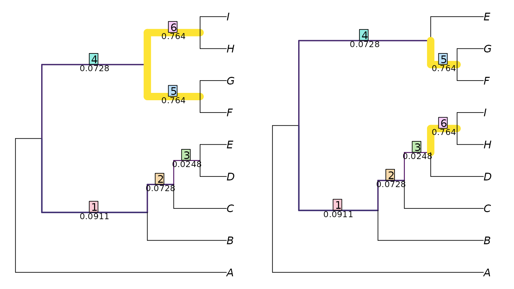
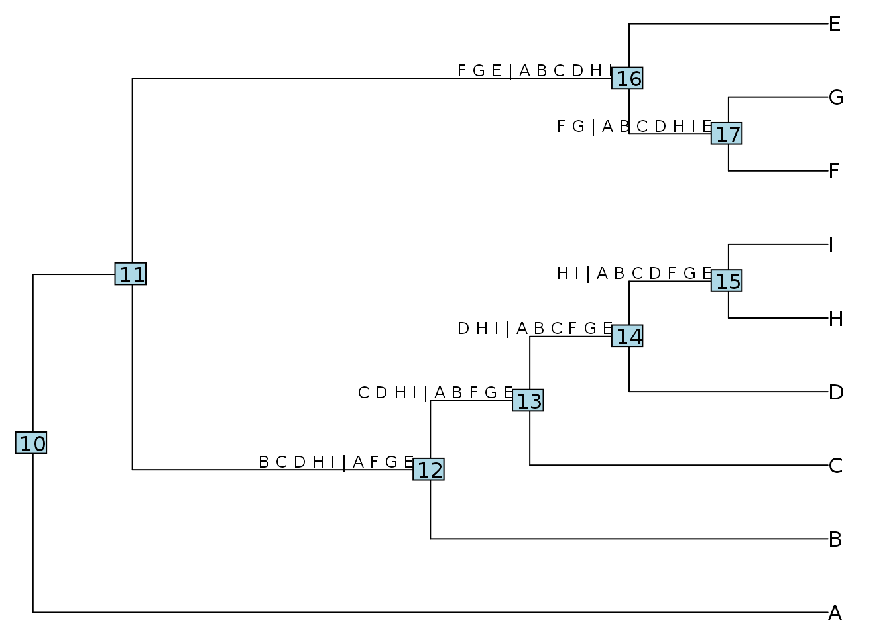

vignettes/Using-TreeDist.Rmd
Using-TreeDist.RmdThis document should contain all you need to get started measuring tree distances with ‘TreeDist’. If you get stuck, please let me know so I can improve this documentation.
Instructions for loading phylogenetic trees into R can be found in a separate vignette. For these examples, we’ll enter two simple trees by hand:
We can calculate distances between pairs of trees using the ‘TreeDist’ package.
First we’ll install the package. We can either install the stable version (coming 2020) from the CRAN repository:
install.packages('TreeDist')
or the development version, from GitHub – which will contain the latest features but may not be as extensively tested:
devtools::install_github('ms609/TreeDist')
Then we’ll load the package in to R’s working environment:
library('TreeDist')
Now the package’s functions are available within R. Let’s proceed to calculate some tree distances.
Calculating the distance between two trees is as simple as:
distance <- TreeDistance(tree1, tree2)
The convenience function TreeDistance() returns the variation of clustering information between two trees, normalized against the total information content of all splits.
If you have more than two trees to compare, you can send a list of trees (class: list or multiPhylo) to the distance comparison function. The function will then calculate the distance between each tree in the first list and each tree in the second.
oneTree <- ape::rtree(11) twoTrees <- structure(list(one = ape::rtree(11), two = ape::rtree(11)), class = 'multiPhylo') threeTrees <- list(a = ape::rtree(11), b = ape::rtree(11), c = ape::rtree(11)) TreeDistance(oneTree, twoTrees)
## one two
## 0.2380803 0.3196611TreeDistance(twoTrees, threeTrees)
## a b c
## one 0.3779552 0.1649099 0.2314705
## two 0.1649850 0.2443892 0.3510927Generalized Robinson-Foulds metrics, such as the variation of clustering information, rely on matching each split within a tree with another split in the other tree.
We can view an optimal matching:
VisualizeMatching(ClusteringInfoDistance, tree1, tree2)

This shows the six splits in tree 1, and the paired splits in tree two.
Each split is labelled with a measure of its similarity, which is its contribution to the total tree similarity score.
We can view this information in a format accessible for further examination in R with:
ClusteringInfoDistance(tree1, tree2, reportMatching = TRUE)
## [1] 6.960578
## attr(,"matching")
## [1] 1 2 3 5 6 4
## attr(,"pairScores")
## [,1] [,2] [,3] [,4] [,5] [,6]
## [1,] 0.091091008 0.007214618 0.01831078 0.22478751 0.01831078 0.22478751
## [2,] 0.018310782 0.072780226 0.00000000 0.15200728 0.00000000 0.15200728
## [3,] 0.002565287 0.002565287 0.02475761 0.09288851 0.02475761 0.09288851
## [4,] 0.007214618 0.007214618 0.07278023 0.31976006 0.07278023 0.31976006
## [5,] 0.319760062 0.224787510 0.15200728 0.09288851 0.45810590 0.76420451
## [6,] 0.224787510 0.319760062 0.45810590 0.76420451 0.15200728 0.09288851
## attr(,"matchedSplits")
## [1] "B C D E | A F G H I => B C D H I | A E F G"
## [2] "C D E | A B F G H I => C D H I | A B E F G"
## [3] "D E | A B C F G H I => D H I | A B C E F G"
## [4] "F G H I | A B C D E => E F G | A B C D H I"
## [5] "F G | A B C D E H I => F G | A B C D E H I"
## [6] "H I | A B C D E F G => H I | A B C D E F G"Here, the pairScores attribute lists the score of each possible matching of splits.
We can identify the splits with:
splits <- as.character(TreeTools::as.Splits(tree2)) splits
## 12 13 14
## "B C D H I | A F G E" "C D H I | A B F G E" "D H I | A B C F G E"
## 15 16 17
## "H I | A B C D F G E" "F G E | A B C D H I" "F G | A B C D H I E"The names of the splits correspond to the number of an associated node in the original tree:
oldPar <- par(mar = rep(0, 4)) plot(tree2) ape::nodelabels() ape::nodelabels(splits, as.integer(names(splits)), adj = c(1.1, -0.2), cex = 0.8, frame = 'none')

Note that strictly, (informative) splits are associated with (internal) edges. To avoid listing the same split twice, nodes close to the root (here, 10 and 11) will not be associated with a split.
You may wish to:
Provide context for tree distances
Review available distance measures and the corresponding functions